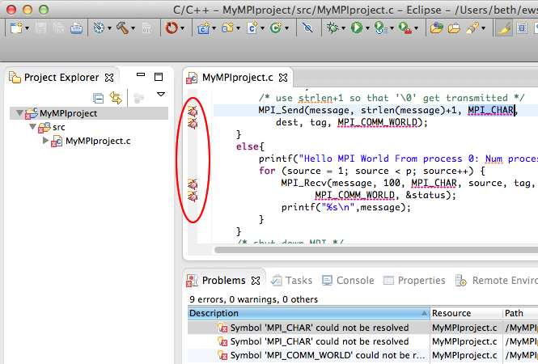
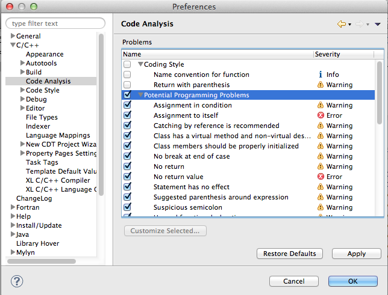
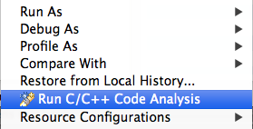

CDT's Code Analysis (Codan) feature assists the user by flagging possible syntax errors and other issues as problems, warnings, or not at all. By default many of these are flagged as errors and can be confused with compile errors.
Codan Errors are identified with "bug icons" and they are listed in the Problems View as well.

If the include file path settings are not correct, Codan will report that the referenced APIs are in error on the local Eclipse workbench. For synchronized projects, if you do not care to see errors on the local copies or use Eclipse hyperlink navigation within the editor, you may not want to see Codan errors. (The build system on the remote target probably correctly locates include files during build).
You may want to turn off Codan or change its default reporting to Warning instead of Error.
To modify the Codan settings, open Preferences (Window > Preferences, or on Mac OS X, Eclipse > Preferences) and under C/C++ select Code Analysis

To turn off the Codan errors, uncheck the boxes - uncheck the box at the top of each category and it will disable all the items in that category. Be sure to scroll down in the Problems list to see them all. You can also change the error or warning level of each item by selecting the Customize Selected... button.
If the Codan errors don't disappear when you close the Preferences dialog, you may need to re-run Codan. You can re-run Codan by selecting the project in the Project Explorer, and selecting rightmouse > Run C/C++ Code Analysis via the context menu.

If you turned off Codan errors in the Preferences, then the error markers should disappear.